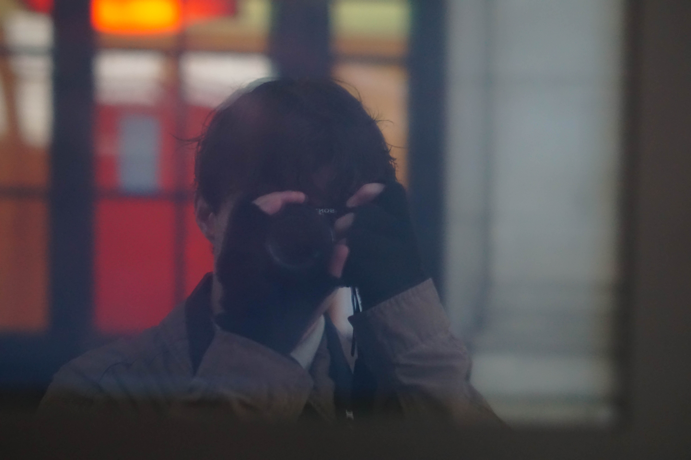

À Propos de Moi
Bonjour à toi ! Je suis Jean-Baptiste Laporte-Fray, j'ai 21 ans et je suis actuellement en 3ème et dernière année d'un BUT Information Numérique à l'IUT Bordeaux Montaigne, dans l'optique de potentiellement évoluer vers l'un des domaines de la Communication, ou bien du Journalisme.

Je suis un grand passioné de Musique, mais aussi fervant enthousiaste de tout ce qui touche à l'art.
📸 J'aspire à m'investir dans la photo à l'avenir, sous toutes ses formes, mais notamment dans l'évènementiel et plus précisément les concerts.